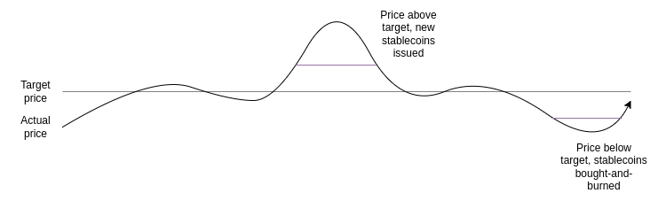
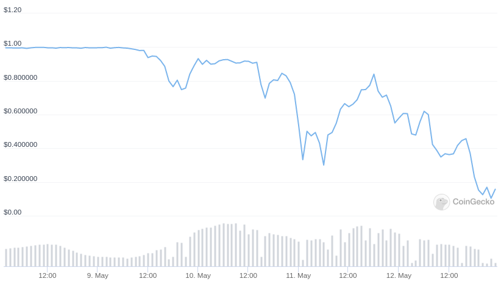
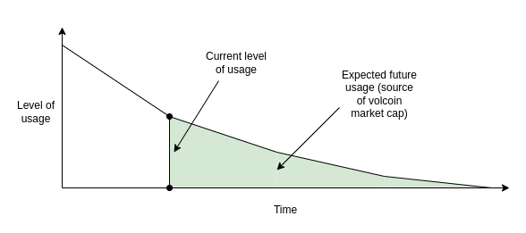
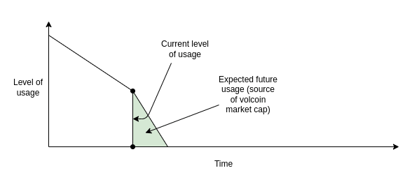
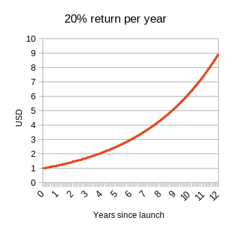
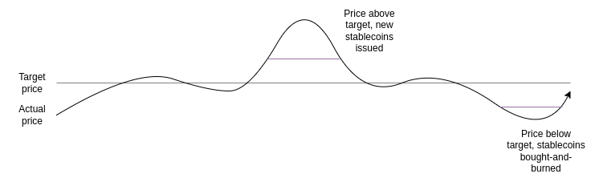
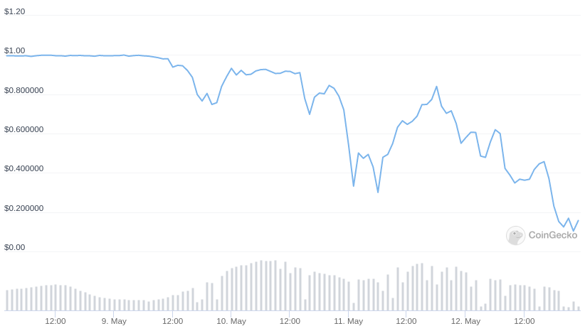
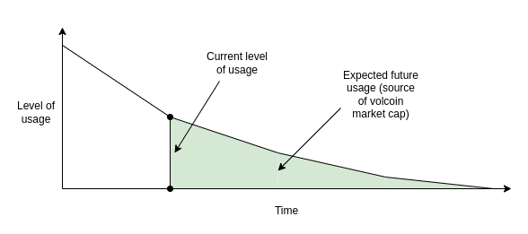
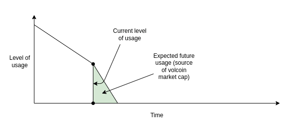
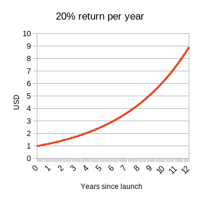

Two thought experiments to evaluate automated stablecoins
2022 May 25
See all posts
Two thought experiments to evaluate automated stablecoins
Special thanks to Dan Robinson, Hayden Adams and Dankrad Feist for feedback and review.
The recent LUNA crash, which led to tens of billions of dollars of losses, has led to a storm of criticism of "algorithmic stablecoins" as a category, with many considering them to be a "fundamentally flawed product". The greater level of scrutiny on defi financial mechanisms, especially those that try very hard to optimize for "capital efficiency", is highly welcome. The greater acknowledgement that present performance is no guarantee of future returns (or even future lack-of-total-collapse) is even more welcome. Where the sentiment goes very wrong, however, is in painting all automated pure-crypto stablecoins with the same brush, and dismissing the entire category.
While there are plenty of automated stablecoin designs that are fundamentally flawed and doomed to collapse eventually, and plenty more that can survive theoretically but are highly risky, there are also many stablecoins that are highly robust in theory, and have survived extreme tests of crypto market conditions in practice. Hence, what we need is not stablecoin boosterism or stablecoin doomerism, but rather a return to principles-based thinking. So what are some good principles for evaluating whether or not a particular automated stablecoin is a truly stable one? For me, the test that I start from is asking how the stablecoin responds to two thought experiments.
Click here to skip straight to the thought experiments.
Reminder: what is an automated stablecoin?
For the purposes of this post, an automated stablecoin is a system that has the following properties:
- It issues a stablecoin, which attempts to target a particular price index. Usually, the target is 1 USD, but there are other options too. There is some targeting mechanism that continuously works to push the price toward the index if it veers away in either direction. This makes ETH and BTC not stablecoins (duh).
- The targeting mechanism is completely decentralized, and free of protocol-level dependencies on specific trusted actors. Particularly, it must not rely on asset custodians. This makes USDT and USDC not automated stablecoins.
In practice, (2) means that the targeting mechanism must be some kind of smart contract which manages some reserve of crypto-assets, and uses those crypto-assets to prop up the price if it drops.
How does Terra work?
Terra-style stablecoins (roughly the same family as seignorage shares, though many implementation details differ) work by having a pair of two coins, which we'll call a stablecoin and a volatile-coin or volcoin (in Terra, UST is the stablecoin and LUNA is the volcoin). The stablecoin retains stability using a simple mechanism:
- If the price of the stablecoin exceeds the target, the system auctions off new stablecoins (and uses the revenue to burn volcoins) until the price returns to the target
- If the price of the stablecoin drops below the target, the system buys back and burns stablecoins (issuing new volcoins to fund the burn) until the price returns to the target

Now what is the price of the volcoin? The volcoin's value could be purely speculative, backed by an assumption of greater stablecoin demand in the future (which would require burning volcoins to issue). Alternatively, the value could come from fees: either trading fees on stablecoin <-> volcoin exchange, or holding fees charged per year to stablecoin holders, or both. But in all cases, the price of the volcoin comes from the expectation of future activity in the system.
How does RAI work?
In this post I'm focusing on RAI rather than DAI because RAI better exemplifies the pure "ideal type" of a collateralized automated stablecoin, backed by ETH only. DAI is a hybrid system backed by both centralized and decentralized collateral, which is a reasonable choice for their product but it does make analysis trickier.
In RAI, there are two main categories of participants (there's also holders of FLX, the speculative token, but they play a less important role):
- A RAI holder holds RAI, the stablecoin of the RAI system.
- A RAI lender deposits some ETH into a smart contract object called a "safe". They can then withdraw RAI up to the value of \(\frac{2}{3}\) of that ETH (eg. if 1 ETH = 100 RAI, then if you deposit 10 ETH you can withdraw up to \(10 * 100 * \frac{2}{3} \approx 667\) RAI). A lender can recover the ETH in the same if they pay back their RAI debt.
There are two main reasons to become a RAI lender:
- To go long on ETH: if you deposit 10 ETH and withdraw 500 RAI in the above example, you end up with a position worth 500 RAI but with 10 ETH of exposure, so it goes up/down by 2% for every 1% change in the ETH price.
- Arbitrage if you find a fiat-denominated investment that goes up faster than RAI, you can borrow RAI, put the funds into that investment, and earn a profit on the difference.
If the ETH price drops, and a safe no longer has enough collateral (meaning, the RAI debt is now more than \(\frac{2}{3}\) times the value of the ETH deposited), a liquidation event takes place. The safe gets auctioned off for anyone else to buy by putting up more collateral.
The other main mechanism to understand is redemption rate adjustment. In RAI, the target isn't a fixed quantity of USD; instead, it moves up or down, and the rate at which it moves up or down adjusts in response to market conditions:
- If the price of RAI is above the target, the redemption rate decreases, reducing the incentive to hold RAI and increasing the incentive to hold negative RAI by being a lender. This pushes the price back down.
- If the price of RAI is below the target, the redemption rate increases, increasing the incentive to hold RAI and reducing the incentive to hold negative RAI by being a lender. This pushes the price back up.

Thought experiment 1: can the stablecoin, even in theory, safely "wind down" to zero users?
In the non-crypto real world, nothing lasts forever. Companies shut down all the time, either because they never manage to find enough users in the first place, or because once-strong demand for their product is no longer there, or because they get displaced by a superior competitor. Sometimes, there are partial collapses, declines from mainstream status to niche status (eg. MySpace). Such things have to happen to make room for new products. But in the non-crypto world, when a product shuts down or declines, customers generally don't get hurt all that much. There are certainly some cases of people falling through the cracks, but on the whole shutdowns are orderly and the problem is manageable.
But what about automated stablecoins? What happens if we look at a stablecoin from the bold and radical perspective that the system's ability to avoid collapsing and losing huge amounts of user funds should not depend on a constant influx of new users? Let's see and find out!
Can Terra wind down?
In Terra, the price of the volcoin (LUNA) comes from the expectation of fees from future activity in the system. So what happens if expected future activity drops to near-zero? The market cap of the volcoin drops until it becomes quite small relative to the stablecoin. At that point, the system becomes extremely fragile: only a small downward shock to demand for the stablecoin could lead to the targeting mechanism printing lots of volcoins, which causes the volcoin to hyperinflate, at which point the stablecoin too loses its value.
The system's collapse can even become a self-fulfilling prophecy: if it seems like a collapse is likely, this reduces the expectation of future fees that is the basis of the value of the volcoin, pushing the volcoin's market cap down, making the system even more fragile and potentially triggering that very collapse - exactly as we saw happen with Terra in May.
|
LUNA price, May 8-12
|
UST price, May 8-12
|
|

|

|
First, the volcoin price drops. Then, the stablecoin starts to shake. The system attempts to shore up stablecoin demand by issuing more volcoins. With confidence in the system low, there are few buyers, so the volcoin price rapidly falls. Finally, once the volcoin price is near-zero, the stablecoin too collapses.
In principle, if demand decreases extremely slowly, the volcoin's expected future fees and hence its market cap could still be large relative to the stablecoin, and so the system would continue to be stable at every step of its decline. But this kind of successful slowly-decreasing managed decline is very unlikely. What's more likely is a rapid drop in interest followed by a bang.

Safe wind-down: at every step, there's enough expected future revenue to justify enough volcoin market cap to keep the stablecoin safe at its current level.

Unsafe wind-down: at some point, there's not enough expected future revenue to justify enough volcoin market cap to keep the stablecoin safe. Collapse is likely.
Can RAI wind down?
RAI's security depends on an asset external to the RAI system (ETH), so RAI has a much easier time safely winding down. If the decline in demand is unbalanced (so, either demand for holding drops faster or demand for lending drops faster), the redemption rate will adjust to equalize the two. The lenders are holding a leveraged position in ETH, not FLX, so there's no risk of a positive-feedback loop where reduced confidence in RAI causes demand for lending to also decrease.
If, in the extreme case, all demand for holding RAI disappears simultaneously except for one holder, the redemption rate would skyrocket until eventually every lender's safe gets liquidated. The single remaining holder would be able to buy the safe in the liquidation auction, use their RAI to immediately clear its debt, and withdraw the ETH. This gives them the opportunity to get a fair price for their RAI, paid for out of the ETH in the safe.
Another extreme case worth examining is where RAI becomes the primary appliation on Ethereum. In this case, a reduction in expected future demand for RAI would crater the price of ETH. In the extreme case, a cascade of liquidations is possible, leading to a messy collapse of the system. But RAI is far more robust against this possibility than a Terra-style system.
Thought experiment 2: what happens if you try to peg the stablecoin to an index that goes up 20% per year?
Currently, stablecoins tend to be pegged to the US dollar. RAI stands out as a slight exception, because its peg adjusts up or down due to the redemption rate and the peg started at 3.14 USD instead of 1 USD (the exact starting value was a concession to being normie-friendly, as a true math nerd would have chosen tau = 6.28 USD instead). But they do not have to be. You can have a stablecoin pegged to a basket of assets, a consumer price index, or some arbitrarily complex formula ("a quantity of value sufficient to buy {global average CO2 concentration minus 375} hectares of land in the forests of Yakutia"). As long as you can find an oracle to prove the index, and people to participate on all sides of the market, you can make such a stablecoin work.
As a thought experiment to evaluate sustainability, let's imagine a stablecoin with a particular index: a quantity of US dollars that grows by 20% per year. In math language, the index is \(1.2^{(t - t_0)}\) USD, where \(t\) is the current time in years and \(t_0\) is the time when the system launched. An even more fun alternative is \(1.04^{\frac{1}{2}*(t - t_0)^2}\) USD, so it starts off acting like a regular USD-denominated stablecoin, but the USD-denominated return rate keeps increasing by 4% every year.
|

|

|
Obviously, there is no genuine investment that can get anywhere close to 20% returns per year, and there is definitely no genuine investment that can keep increasing its return rate by 4% per year forever. But what happens if you try?
I will claim that there's basically two ways for a stablecoin that tries to track such an index to turn out:
- It charges some kind of negative interest rate on holders that equilibrates to basically cancel out the USD-denominated growth rate built in to the index.
- It turns into a Ponzi, giving stablecoin holders amazing returns for some time until one day it suddenly collapses with a bang.
It should be pretty easy to understand why RAI does (1) and LUNA does (2), and so RAI is better than LUNA. But this also shows a deeper and more important fact about stablecoins: for a collateralized automated stablecoin to be sustainable, it has to somehow contain the possibility of implementing a negative interest rate. A version of RAI programmatically prevented from implementing negative interest rates (which is what the earlier single-collateral DAI basically was) would also turn into a Ponzi if tethered to a rapidly-appreciating price index.
Even outside of crazy hypotheticals where you build a stablecoin to track a Ponzi index, the stablecoin must somehow be able to respond to situations where even at a zero interest rate, demand for holding exceeds demand for borrowing. If you don't, the price rises above the peg, and the stablecoin becomes vulnerable to price movements in both directions that are quite unpredictable.
Negative interest rates can be done in two ways:
- RAI-style, having a floating target that can drop over time if the redemption rate is negative
- Actually having balances decrease over time
Option (1) has the user-experience flaw that the stablecoin no longer cleanly tracks "1 USD". Option (2) has the developer-experience flaw that developers aren't used to dealing with assets where receiving N coins does not unconditionally mean that you can later send N coins. But choosing one of the two seems unavoidable - unless you go the MakerDAO route of being a hybrid stablecoin that uses both pure cryptoassets and centralized assets like USDC as collateral.
What can we learn?
In general, the crypto space needs to move away from the attitude that it's okay to achieve safety by relying on endless growth. It's certainly not acceptable to maintain that attitude by saying that "the fiat world works in the same way", because the fiat world is not attempting to offer anyone returns that go up much faster than the regular economy, outside of isolated cases that certainly should be criticized with the same ferocity.
Instead, while we certainly should hope for growth, we should evaluate how safe systems are by looking at their steady state, and even the pessimistic state of how they would fare under extreme conditions and ultimately whether or not they can safely wind down. If a system passes this test, that does not mean it's safe; it could still be fragile for other reasons (eg. insufficient collateral ratios), or have bugs or governance vulnerabilities. But steady-state and extreme-case soundness should always be one of the first things that we check for.
Two thought experiments to evaluate automated stablecoins
2022 May 25 See all postsSpecial thanks to Dan Robinson, Hayden Adams and Dankrad Feist for feedback and review.
The recent LUNA crash, which led to tens of billions of dollars of losses, has led to a storm of criticism of "algorithmic stablecoins" as a category, with many considering them to be a "fundamentally flawed product". The greater level of scrutiny on defi financial mechanisms, especially those that try very hard to optimize for "capital efficiency", is highly welcome. The greater acknowledgement that present performance is no guarantee of future returns (or even future lack-of-total-collapse) is even more welcome. Where the sentiment goes very wrong, however, is in painting all automated pure-crypto stablecoins with the same brush, and dismissing the entire category.
While there are plenty of automated stablecoin designs that are fundamentally flawed and doomed to collapse eventually, and plenty more that can survive theoretically but are highly risky, there are also many stablecoins that are highly robust in theory, and have survived extreme tests of crypto market conditions in practice. Hence, what we need is not stablecoin boosterism or stablecoin doomerism, but rather a return to principles-based thinking. So what are some good principles for evaluating whether or not a particular automated stablecoin is a truly stable one? For me, the test that I start from is asking how the stablecoin responds to two thought experiments.
Click here to skip straight to the thought experiments.
Reminder: what is an automated stablecoin?
For the purposes of this post, an automated stablecoin is a system that has the following properties:
In practice, (2) means that the targeting mechanism must be some kind of smart contract which manages some reserve of crypto-assets, and uses those crypto-assets to prop up the price if it drops.
How does Terra work?
Terra-style stablecoins (roughly the same family as seignorage shares, though many implementation details differ) work by having a pair of two coins, which we'll call a stablecoin and a volatile-coin or volcoin (in Terra, UST is the stablecoin and LUNA is the volcoin). The stablecoin retains stability using a simple mechanism:

Now what is the price of the volcoin? The volcoin's value could be purely speculative, backed by an assumption of greater stablecoin demand in the future (which would require burning volcoins to issue). Alternatively, the value could come from fees: either trading fees on stablecoin <-> volcoin exchange, or holding fees charged per year to stablecoin holders, or both. But in all cases, the price of the volcoin comes from the expectation of future activity in the system.
How does RAI work?
In this post I'm focusing on RAI rather than DAI because RAI better exemplifies the pure "ideal type" of a collateralized automated stablecoin, backed by ETH only. DAI is a hybrid system backed by both centralized and decentralized collateral, which is a reasonable choice for their product but it does make analysis trickier.
In RAI, there are two main categories of participants (there's also holders of FLX, the speculative token, but they play a less important role):
There are two main reasons to become a RAI lender:
If the ETH price drops, and a safe no longer has enough collateral (meaning, the RAI debt is now more than \(\frac{2}{3}\) times the value of the ETH deposited), a liquidation event takes place. The safe gets auctioned off for anyone else to buy by putting up more collateral.
The other main mechanism to understand is redemption rate adjustment. In RAI, the target isn't a fixed quantity of USD; instead, it moves up or down, and the rate at which it moves up or down adjusts in response to market conditions:
Thought experiment 1: can the stablecoin, even in theory, safely "wind down" to zero users?
In the non-crypto real world, nothing lasts forever. Companies shut down all the time, either because they never manage to find enough users in the first place, or because once-strong demand for their product is no longer there, or because they get displaced by a superior competitor. Sometimes, there are partial collapses, declines from mainstream status to niche status (eg. MySpace). Such things have to happen to make room for new products. But in the non-crypto world, when a product shuts down or declines, customers generally don't get hurt all that much. There are certainly some cases of people falling through the cracks, but on the whole shutdowns are orderly and the problem is manageable.
But what about automated stablecoins? What happens if we look at a stablecoin from the bold and radical perspective that the system's ability to avoid collapsing and losing huge amounts of user funds should not depend on a constant influx of new users? Let's see and find out!
Can Terra wind down?
In Terra, the price of the volcoin (LUNA) comes from the expectation of fees from future activity in the system. So what happens if expected future activity drops to near-zero? The market cap of the volcoin drops until it becomes quite small relative to the stablecoin. At that point, the system becomes extremely fragile: only a small downward shock to demand for the stablecoin could lead to the targeting mechanism printing lots of volcoins, which causes the volcoin to hyperinflate, at which point the stablecoin too loses its value.
The system's collapse can even become a self-fulfilling prophecy: if it seems like a collapse is likely, this reduces the expectation of future fees that is the basis of the value of the volcoin, pushing the volcoin's market cap down, making the system even more fragile and potentially triggering that very collapse - exactly as we saw happen with Terra in May.

First, the volcoin price drops. Then, the stablecoin starts to shake. The system attempts to shore up stablecoin demand by issuing more volcoins. With confidence in the system low, there are few buyers, so the volcoin price rapidly falls. Finally, once the volcoin price is near-zero, the stablecoin too collapses.
In principle, if demand decreases extremely slowly, the volcoin's expected future fees and hence its market cap could still be large relative to the stablecoin, and so the system would continue to be stable at every step of its decline. But this kind of successful slowly-decreasing managed decline is very unlikely. What's more likely is a rapid drop in interest followed by a bang.

Safe wind-down: at every step, there's enough expected future revenue to justify enough volcoin market cap to keep the stablecoin safe at its current level.

Unsafe wind-down: at some point, there's not enough expected future revenue to justify enough volcoin market cap to keep the stablecoin safe. Collapse is likely.
Can RAI wind down?
RAI's security depends on an asset external to the RAI system (ETH), so RAI has a much easier time safely winding down. If the decline in demand is unbalanced (so, either demand for holding drops faster or demand for lending drops faster), the redemption rate will adjust to equalize the two. The lenders are holding a leveraged position in ETH, not FLX, so there's no risk of a positive-feedback loop where reduced confidence in RAI causes demand for lending to also decrease.
If, in the extreme case, all demand for holding RAI disappears simultaneously except for one holder, the redemption rate would skyrocket until eventually every lender's safe gets liquidated. The single remaining holder would be able to buy the safe in the liquidation auction, use their RAI to immediately clear its debt, and withdraw the ETH. This gives them the opportunity to get a fair price for their RAI, paid for out of the ETH in the safe.
Another extreme case worth examining is where RAI becomes the primary appliation on Ethereum. In this case, a reduction in expected future demand for RAI would crater the price of ETH. In the extreme case, a cascade of liquidations is possible, leading to a messy collapse of the system. But RAI is far more robust against this possibility than a Terra-style system.
Thought experiment 2: what happens if you try to peg the stablecoin to an index that goes up 20% per year?
Currently, stablecoins tend to be pegged to the US dollar. RAI stands out as a slight exception, because its peg adjusts up or down due to the redemption rate and the peg started at 3.14 USD instead of 1 USD (the exact starting value was a concession to being normie-friendly, as a true math nerd would have chosen tau = 6.28 USD instead). But they do not have to be. You can have a stablecoin pegged to a basket of assets, a consumer price index, or some arbitrarily complex formula ("a quantity of value sufficient to buy {global average CO2 concentration minus 375} hectares of land in the forests of Yakutia"). As long as you can find an oracle to prove the index, and people to participate on all sides of the market, you can make such a stablecoin work.
As a thought experiment to evaluate sustainability, let's imagine a stablecoin with a particular index: a quantity of US dollars that grows by 20% per year. In math language, the index is \(1.2^{(t - t_0)}\) USD, where \(t\) is the current time in years and \(t_0\) is the time when the system launched. An even more fun alternative is \(1.04^{\frac{1}{2}*(t - t_0)^2}\) USD, so it starts off acting like a regular USD-denominated stablecoin, but the USD-denominated return rate keeps increasing by 4% every year.

Obviously, there is no genuine investment that can get anywhere close to 20% returns per year, and there is definitely no genuine investment that can keep increasing its return rate by 4% per year forever. But what happens if you try?
I will claim that there's basically two ways for a stablecoin that tries to track such an index to turn out:
It should be pretty easy to understand why RAI does (1) and LUNA does (2), and so RAI is better than LUNA. But this also shows a deeper and more important fact about stablecoins: for a collateralized automated stablecoin to be sustainable, it has to somehow contain the possibility of implementing a negative interest rate. A version of RAI programmatically prevented from implementing negative interest rates (which is what the earlier single-collateral DAI basically was) would also turn into a Ponzi if tethered to a rapidly-appreciating price index.
Even outside of crazy hypotheticals where you build a stablecoin to track a Ponzi index, the stablecoin must somehow be able to respond to situations where even at a zero interest rate, demand for holding exceeds demand for borrowing. If you don't, the price rises above the peg, and the stablecoin becomes vulnerable to price movements in both directions that are quite unpredictable.
Negative interest rates can be done in two ways:
Option (1) has the user-experience flaw that the stablecoin no longer cleanly tracks "1 USD". Option (2) has the developer-experience flaw that developers aren't used to dealing with assets where receiving N coins does not unconditionally mean that you can later send N coins. But choosing one of the two seems unavoidable - unless you go the MakerDAO route of being a hybrid stablecoin that uses both pure cryptoassets and centralized assets like USDC as collateral.
What can we learn?
In general, the crypto space needs to move away from the attitude that it's okay to achieve safety by relying on endless growth. It's certainly not acceptable to maintain that attitude by saying that "the fiat world works in the same way", because the fiat world is not attempting to offer anyone returns that go up much faster than the regular economy, outside of isolated cases that certainly should be criticized with the same ferocity.
Instead, while we certainly should hope for growth, we should evaluate how safe systems are by looking at their steady state, and even the pessimistic state of how they would fare under extreme conditions and ultimately whether or not they can safely wind down. If a system passes this test, that does not mean it's safe; it could still be fragile for other reasons (eg. insufficient collateral ratios), or have bugs or governance vulnerabilities. But steady-state and extreme-case soundness should always be one of the first things that we check for.